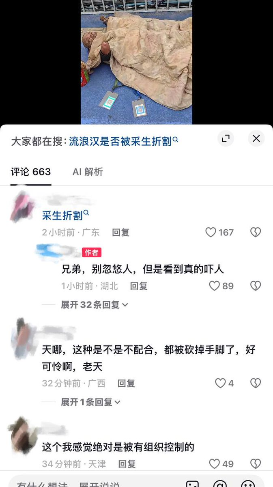
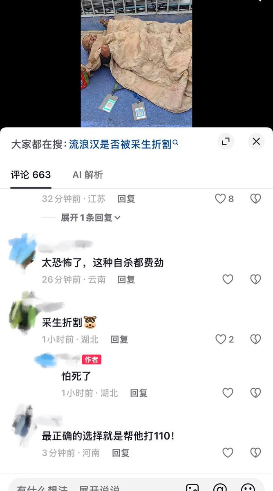

✞緋月✞
@HiiroGekkaFlan
@whyyoutouzhele 以前确实看到过，但现在还有这种现象确实挺骇人听闻了😨
马上部分群体要发出尖锐爆鸣了


李老师不是你老师
@whyyoutouzhele
8月14日，网友曝光：
湖北武汉洪山区街道口至亚贸广场附近的天桥上躺着一名残疾人，双手被截肢，还疑似骨头外露、腿部残疾，脸上沾满污垢，身边挂着二维收款码。
评论区网友认为这是“采生折割”（指把健康人折磨成残疾以乞讨）或被“有组织控制”。 https://t.co/69r4NIJxFZ